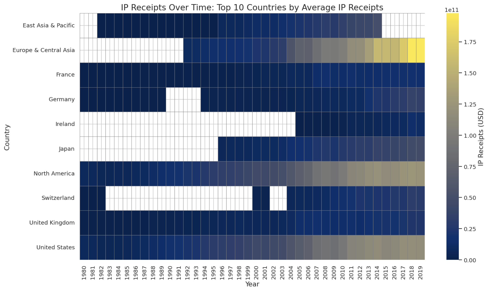
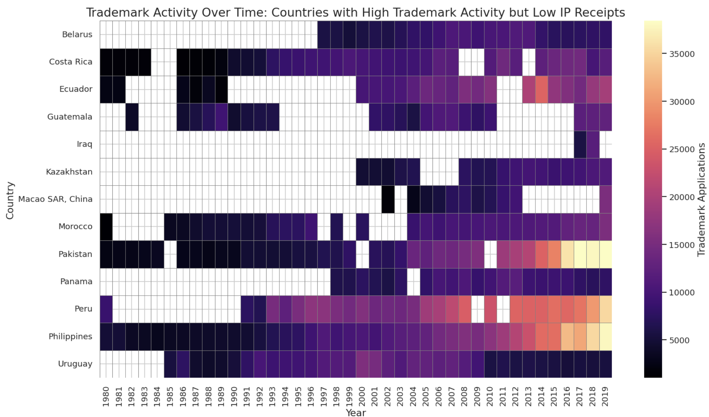

Proposition: Investing in intellectual property development indicates a country's innovation capacity and economic growth.
FOR the Proposition

Design Decisions and Rationale:
- Focusing on countries with high IP receipts.
- Sorting the countries by their average IP receipts over the entire time period and displaying only the top few most consistent high performers.
- Using a very saturated and bright yellow for the highest IP receipt values.
- Score: 1 - These countries are more commonly recognized as having innovative economies.
- Rationale: By showing consistent high IP receipts in these nations over time, the visualization shows that there is a strong connection between economic success and IP activity.
- Score: 0 - Sorting is standard, but I chose to focus only on the very top to emphasize my point.
- Rationale: Highlighting the success of a select few countries with high IP receipts over years can help strengthen the argument that investing in IP leads to sustained economic benefits.
- Score: 1 - Brighter colors can exaggerate the differences.
- Rationale: Making the highest values stand out can allow the viewer to focus on countries with economic success and overlook the performance of the other countries.
AGAINST the Proposition

Design Decisions and Rationale:
- Selecting countries with high trademark activity but low IP receipts.
- Using a color scale that emphasizes the volume of trademark applications.
- Including a wider range of countries with high trademark activity, even if their IP receipts weren't as high.
- Score: 1 - The data shows that these countries have large amounts of trademark activity.
- Rationale: By showing that countries with high amounts of trademark activity but lower IP receipts, the visualization challenges the connecting between IP activity and economic benefit.
- Score: 0 - Accurately representing the count.
- Rationale: This highlights that high levels of activity does not equate to high value or economic impact from IP, going against the proposition.
- Score: 1 - Shows a broader picture of trademark activity.
- Rationale: By showing that significant trademark activity also occurs in countries that don't necessarily have correspondingly high IP receipts, I suggest that investing in intellectual property doesn't automatically translate to high financial returns from IP.
Final Reflection
[WRITE FINAL REFLECTION PARAGRAPHS HERE.]